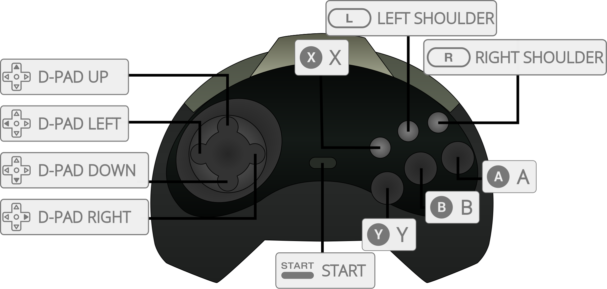

X Y
X YYabause is a Sega Saturn emulator that is both open-source and written with portability in mind. It is software rendered. Without any update for years it seems upstream is now dead.
The Yabause core has been authored by
The Yabause core is licensed under
A summary of the licenses behind RetroArch and its cores can be found here.
Content that can be loaded by the Yabause core have the following file extensions:
RetroArch database(s) that are associated with the Yabause core:
Required or optional firmware files go in the frontend's system directory.
| Filename | Description | md5sum |
|---|---|---|
| saturn_bios.bin | Saturn BIOS - Optional | af5828fdff51384f99b3c4926be27762 |
This md5sum is just a hint, it is not required, any valid saturn bios should work.
!!! Question "Is the bios really optional ?" It's highly recommended to install a real bios, the emulated bios is not perfect and has lesser compatibility. Furthermore, due to the nature of "multi-disc" games on Sega Saturn (they are independent game discs that will send you back to the bios screen when switching), the bios is required if you intend to load m3u files.
Frontend-level settings or features that the Yabause core respects.
| Feature | Supported |
|---|---|
| Restart | ✔ |
| Screenshots | ✔ |
| Saves | ✔ |
| States | ✔ |
| Rewind | ✕ |
| Netplay | ✕ |
| Core Options | ✔ |
| RetroAchievements | ✔ |
| RetroArch Cheats | ✔ |
| Native Cheats | ✕ |
| Controls | ✔ |
| Remapping | ✔ |
| Multi-Mouse | ✕ |
| Rumble | ✕ |
| Sensors | ✕ |
| Camera | ✕ |
| Location | ✕ |
| Subsystem | ✕ |
| Softpatching | ✕ |
| Disk Control | ✔ |
| Username | ✕ |
| Language | ✕ |
| Crop Overscan | ✕ |
| LEDs | ✕ |
The Yabause core's library name is 'Yabause'
The Yabause core saves/loads to/from these directories.
Frontend's Save directory
Frontend's State directory
The Yabause core has the following option(s) that can be tweaked from the core options menu. The default setting is bolded.
Settings with (Restart) means that core has to be closed for the new setting to be applied on next launch.
Frameskip [yabause_frameskip] (disabled|enabled)
Frames are skipped when the CPU is unable to keep up a stable rate.
Force HLE BIOS (restart) [yabause_force_hle_bios] (disabled|enabled)
HLE BIOS will be used even when a real BIOS file is present.
Addon Cartridge (restart) [yabause_addon_cart] (none|1M_ram|4M_ram)
Allows switching between the various RAM cartridges released for the system.
A list of games that require a cartridge can be found here.
6Player Adaptor on Port 1 [yabause_multitap_port1] (disabled|enabled)
Enable multitap in port 1.
6Player Adaptor on Port 2 [yabause_multitap_port2] (disabled|enabled)
Enable multitap in port 2.
Number of Threads (restart) [yabause_numthreads] (1|2|4|8|16|32)
Adjust the number of threads to an appropriate level for your CPU.
The Yabause core supports the following device type(s) in the controls menu, bolded device types are the default for the specified user(s):
Must be enabled in core options.

| User 1 - 12 Remap descriptors | RetroPad Inputs |
|---|---|
| A | |
| X | |
| Start | |
| D-Pad Up | |
| D-Pad Down | |
| D-Pad Left | |
| D-Pad Right | |
| B | |
| Y | |
| C | |
| Z | |
| L | |
| R | |
| Analog X | X |
| Analog Y | Y |